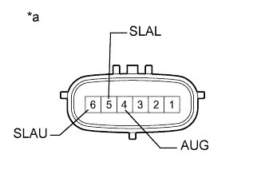
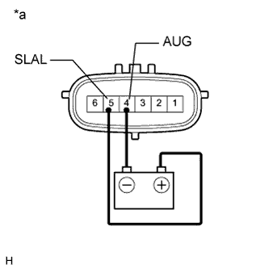
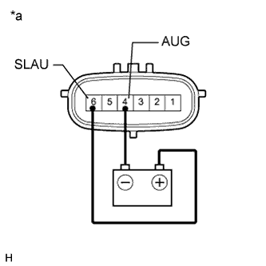

DTC C1831/31 Неисправность электромагнитного клапана гидроаккумулятора / сверху |
DTC C1832/32 Неисправность электромагнитного клапана гидроаккумулятора / снизу |
| Код DTC | Условие обнаружения DTC | Неисправный участок |
| C1831/31 C1832/32 | Выполняется любое из следующих условий:
|
|
| 1.СНИМИТЕ ПОКАЗАНИЯ ПОРТАТИВНОГО ДИАГНОСТИЧЕСКОГО ПРИБОРА (ACCUMULATOR VALVE) |
Выключите зажигание.
Подсоедините портативный диагностический прибор к DLC3.
Включите зажигание (IG).
Включите портативный диагностический прибор.
Войдите в следующие меню: Chassis / KDSS / Data List.
Выберите указанный ниже параметр из списка Data List и считайте его значение с дисплея портативного диагностического прибора.
| Информация на дисплее прибора | Измеряемая величина / диапазон измерения | Нормальное состояние | Замечание по диагностике |
| Accumulator Valve (Downside) | Состояние электромагнитного клапана управления стабилизаторами (для нижней камеры) / ON (ВКЛ) или OFF (ВЫКЛ) | ON (ВКЛ): электромагнитный клапан управления стабилизаторами закрыт OFF (ВЫКЛ): электромагнитный клапан управления стабилизаторами открыт | - |
| Accumulator Valve (Upside) | Состояние электромагнитного клапана управления стабилизаторами (для верхней камеры) / ON (ВКЛ) или OFF (ВЫКЛ) | ON (ВКЛ): электромагнитный клапан управления стабилизаторами открыт OFF (ВЫКЛ): электромагнитный клапан управления стабилизаторами закрыт | - |
Выполните испытание ЭБУ стабилизаторов в режиме Active Test с помощью портативного диагностического прибора.
| Информация на дисплее прибора | Испытываемое устройство | Диапазон регулирования | Замечание по диагностике |
| Accumulator Valve (Upside) | Электромагнитный клапан управления стабилизаторами (для верхней камеры) | Включение / выключение клапана (ON (ВКЛ) / OFF (ВЫКЛ)) | Должен быть слышен звук срабатывания электромагнитного клапана (щелчок). ON (ВКЛ): значение ON (ВКЛ) в списке Data List OFF (ВЫКЛ): значение OFF (ВЫКЛ) в списке Data List При выполнении испытания Active Test электромагнитный клапан включается на 3 с. |
| Accumulator Valve (Downside) | Электромагнитный клапан управления стабилизаторами (для нижней камеры) | Включение / выключение клапана (ON (ВКЛ) / OFF (ВЫКЛ)) | Должен быть слышен звук срабатывания электромагнитного клапана (щелчок). ON (ВКЛ): значение ON (ВКЛ) в списке Data List OFF (ВЫКЛ): значение OFF (ВЫКЛ) в списке Data List При выполнении испытания Active Test электромагнитный клапан включается на 3 с. |
Убедитесь, что слышен звук срабатывания электромагнитного клапана, и значение в списке Data List переключается между ON (ВКЛ) и OFF (ВЫКЛ) в соответствии с командами Active Test.
|
| ||||
| OK | |
| 2.СНОВА ПРОВЕРЬТЕ DTC |
Удалите коды DTC (Нажмите здесь)
Проверьте коды DTC (Нажмите здесь).
| Результат | Следующий шаг |
| DTC выводится | А |
| DTC не выводится | B |
|
| ||||
| А | ||
| ||
| 3.ПРОВЕРЬТЕ ЖГУТ ПРОВОДОВ И РАЗЪЕМ (ЭБУ СТАБИЛИЗАТОРОВ – ЭЛЕКТРОМАГНИТНЫЙ КЛАПАН УПРАВЛЕНИЯ СТАБИЛИЗАТОРАМИ) |
Отсоедините разъем ЭБУ стабилизаторов.
Отсоедините разъем корпуса блока управления стабилизаторами с гидроаккумулятором в сборе.
Измерьте сопротивление в соответствии со значениями, приведенными в таблице ниже.
| Контакты для подключения диагностического прибора | Условие | Заданные условия |
| G123-3 (SLAU) - R20-6 (SLAU) | Всегда | Менее 1 Ом |
| G123-3 (SLAU) - масса | Всегда | 10 кОм или более |
| G123-1 (SLAL) - R20-5 (SLAL) | Всегда | Менее 1 Ом |
| G123-1 (SLAL) - масса | Всегда | 10 кОм или более |
| R20-4 (AUG) - масса | Всегда | Менее 1 Ом |
|
| ||||
| OK | |
| 4.ПРОВЕРЬТЕ ЭЛЕКТРОМАГНИТНЫЙ КЛАПАН УПРАВЛЕНИЯ СТАБИЛИЗАТОРАМИ |
Отсоедините разъем корпуса блока управления стабилизаторами с гидроаккумулятором в сборе.
|  |
Измерьте сопротивление в соответствии со значениями, приведенными в таблице ниже.
| Контакты для подключения диагностического прибора | Условие | Заданные условия |
| 5 (SLAL) - 4 (AUG) | 25°C (77°F) | 24,3 - 25,7 Ом |
| Контакты для подключения диагностического прибора | Условие | Заданные условия |
| 6 (SLAU) - 4 (AUG) | 25°C (77°F) | 24,3 - 25,7 Ом |
| *a | Устройство с неподсоединенным жгутом проводов (корпус блока управления стабилизаторами с гидроаккумулятором в сборе) |
Проверьте наличие звука срабатывания электромагнитного клапана регулировки высоты.
|  |
Для верхней камеры:
Соедините контакт 5 (SLAL) с положительным (+) выводом аккумуляторной батареи, а контакт 4 (AUG) – с отрицательным (-) выводом аккумуляторной батареи.
| *a | Устройство с неподсоединенным жгутом проводов (корпус блока управления стабилизаторами с гидроаккумулятором в сборе) |
|  |
Для нижней камеры:
Соедините контакт 6 (SLAU) с положительным (+) выводом аккумуляторной батареи, а контакт 4 (AUG) – с отрицательным (-) выводом аккумуляторной батареи.
| *a | Устройство с неподсоединенным жгутом проводов (корпус блока управления стабилизаторами с гидроаккумулятором в сборе) |
|
| ||||
| OK | ||
| ||